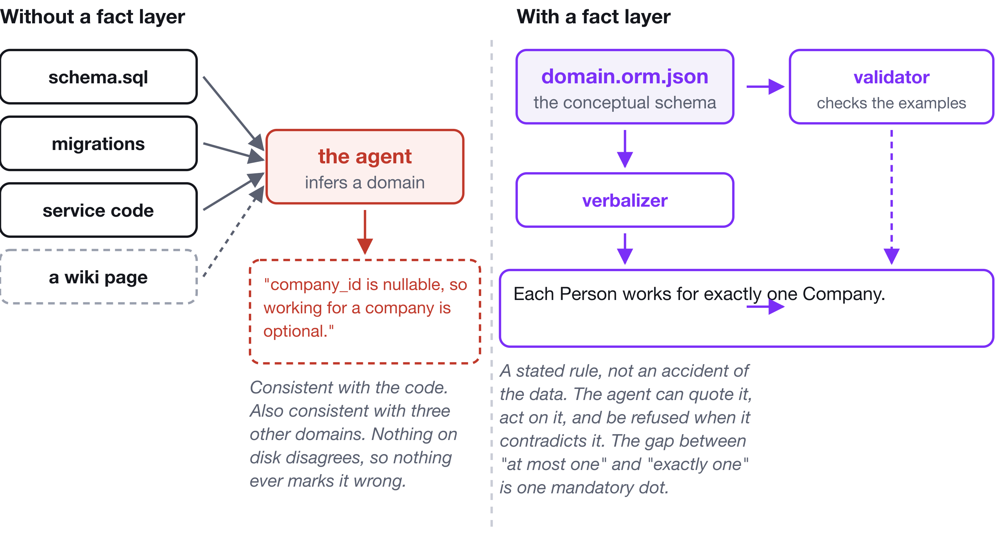
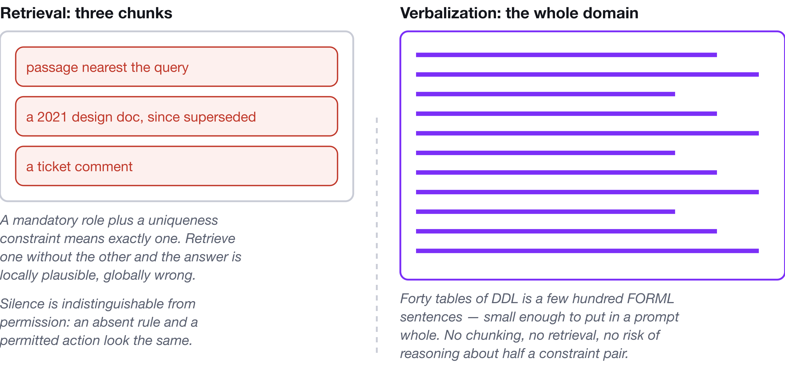
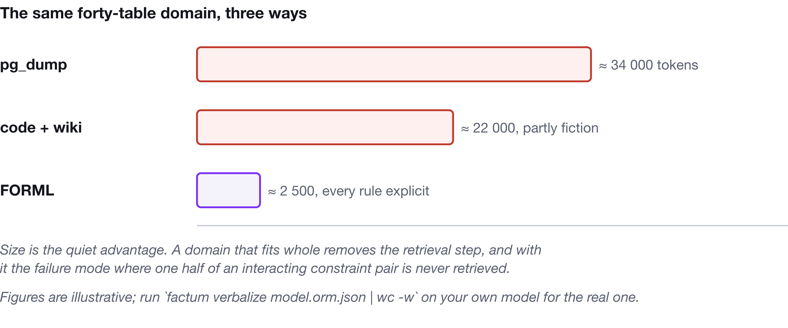
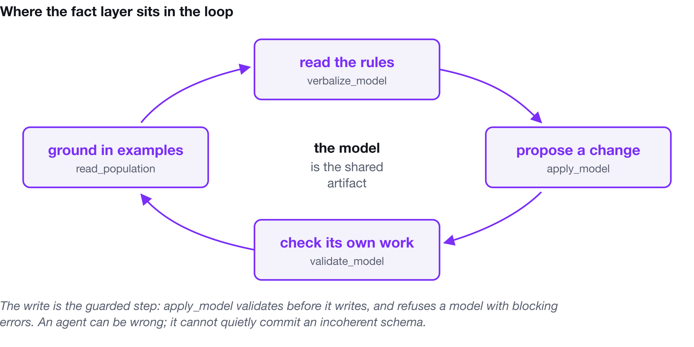

Your Agent Is Guessing About Your Domain
A nullable column can't tell your coding agent whether the rule was optional or nobody ever decided. Here's the layer that can.
Ask your coding agent what a row in subscription means.
It will read your schema, your migrations, a service class and a few tests, and it will give you a fluent, well-organised, internally consistent account of your domain. Most of it will be right. The parts that are wrong will not be marked as wrong — not by the agent, which has no way to know, and not by you, at least not on the first reading.
This is not a reasoning failure. The agent did the only thing available to it: it inferred a conceptual model from a logical one. The trouble is that many conceptual models are consistent with the same logical one.
A nullable column is equally consistent with this is genuinely optional, with this is mandatory but was added after the table existed, and with nobody ever decided. A unique index tells you the database refuses duplicates. It does not tell you whether that was a business rule or a performance fix that has since become load-bearing by accident.
The information needed to tell those apart existed once. It was in a conversation with someone who understood the business. Then it was compressed into DDL, the compression was lossy, and the lossy artifact is the only thing anyone kept.

The gap nobody logs
There is no error message for this failure. Nothing throws. Here is the same piece of domain knowledge as four different artifacts:
| Artifact | What it commits to | What it leaves open |
|---|---|---|
person.company_id int NULL | There is a link, sometimes absent | Whether absence is legal, whether two are possible, what the link means |
class Person { company?: Company } | The same, in another language | All of the above, plus whether the optionality is a rule or a migration artifact |
| "People belong to a company" in a README | An intention | Everything that matters, and whether it is still true |
Each Person works for exactly one Company. | Mandatory, unique, named, directional | Nothing — and a domain expert can reject it out loud |
The fourth row is not a nicer comment on the first three. It is generated from constraints in a model, so it cannot drift from them; it is checked against sample data, so it cannot contradict the examples; and it maps down to the first row mechanically, so the column is a consequence of the rule rather than the place the rule went to die.
Why a better model will not fix this
It is tempting to treat the confident wrong answer as a defect that the next model release will handle. It will not, and it is worth being precise about why, because each of the obvious fixes addresses a different problem.
Under-determination does not survive into the prompt. Nothing marked the column as ambiguous. There is no token for the artifact does not determine this, so there is nothing to carry forward and nothing to report. The ambiguity is real, it is in the world, and it was erased before the prompt was assembled.
Abstention competes with fluency. A model can be asked to say "the code does not determine this", and it is worth asking — but abstention is a behaviour trained against a strong prior toward answering, and it degrades exactly when the question is hard. Confidence in the output is a property of the language being generated, not a measurement of the evidence behind it.
Reasoning does not help, because the premise is missing rather than mis-processed. More thinking tokens, a longer context, a better retriever: each improves the handling of information that is present. None introduces information that is absent.
And retrieval — the reflexive fix — answers a different question. Retrieval finds text similar to the query. Nothing in the pipeline establishes that the retrieved text is true, current, or complete. A design doc from 2021 describing a rule that changed in 2023 scores just as well as a correct one. Silence looks identical to permission: if no document mentions that a customer may have at most one active subscription, nothing is retrieved and the agent proceeds as though the constraint does not exist. And you get chunks, not a domain — constraints interact, and reasoning about a rule you retrieved without the rule you did not is how you get an answer that is locally plausible and globally wrong.

A wrong fact never throws
Here is the asymmetry that makes this matter more in agentic work than it did when only humans read schemas.
A hallucinated function name is caught by the compiler on the next run. A
hallucinated rule is caught by nothing, ever. It is not an output that gets
checked; it is a premise, and premises propagate. The agent's belief that
company_id is optional shows up in the migration it writes, the fixture it
generates, the validation it does not add, and — because those become the
repository — in what the next agent infers next month, with more supporting
evidence than the belief had the first time.
That is the compounding step. The wrongness is not a single answer to be corrected. It is a conceptual model that has been laundered into code.
The fifty-year-old answer
Object-Role Modeling — ORM, and specifically Halpin's ORM 2 — is a fifty-year-old answer to a problem we have just started calling new.
It describes a domain as elementary facts: Person works for Company,
Person has Skill. Facts carry no attributes at all. That sounds like a
restriction and is in fact the whole mechanism: because there is nowhere to hide
a property, every decision about a fact has to be stated as an explicit
constraint. And because every constraint is explicit, every constraint can be
read back as a sentence a domain expert can confirm or reject.
That last property is the accident of history worth paying attention to. ORM was designed in the 1970s and 80s for an entirely human reason — a schema a business expert cannot read is a schema nobody validated. The properties that made it readable to that expert turn out, with nobody planning it, to be exactly the properties a language model needs:
- It is conceptual, not logical. It answers the question the agent is actually asking. Every other artifact in your repository answers "how is this stored", and the agent has to work backwards from the answer to the question.
- It is natural language. Verbalization is not documentation generated beside the model; it is the model rendered. No diagram to interpret, no notation to learn.
- Every rule is stated. Mandatory, uniqueness, frequency, value, subset, exclusion, ring and cardinality constraints are all first-class and all verbalized. An omission is a real signal, not an ambiguity.
- Nothing is implied by an attribute. "One email per person" is a constraint somebody drew, not a column somebody typed.
- It is grounded. Sample populations live in the same file, so the rules arrive with worked examples in the same vocabulary.
- A quoted sentence is checkable. A rule that is not in the text is not in the model, and a sentence the agent quoted back is a claim about a file you can grep.
The surface an agent has to parse is FORML — the Formal Object-Role Modeling Language — and it has a closed vocabulary of fifteen forms. Not a style. A finite list:
It is possible that some Person works for some Company.
Each Person works for exactly one Company.
It is necessary that the possible values of Status are {active, paused, ended}.
It is necessary that no Incident is related to itself in "Incident duplicates Incident".
Each Person is exactly one of: Employee or Contractor.
The last quiet advantage is size, and in practice it is often the decisive one. A domain that occupies forty tables and several thousand lines of DDL is a few hundred FORML sentences. That fits in a context window whole — no retrieval step, no chunking, and no risk of reasoning about one constraint while the interacting one sits unretrieved.

Factum: making it something you can actually run
None of that is worth much as a philosophy. It is worth something as a toolchain, which is why I built Factum — an ORM 2 editor, CLI and MCP server for VS Code.
The editor draws ORM 2 diagrams and verbalizes them as you go. The formal artifact is a by-product of an act of modelling a domain expert can watch and correct in real time — which is the only reason formal languages ever survive.
The CLI is the part that goes in CI: factum validate checks the model and
reports where your own sample data contradicts a constraint you just drew;
factum verbalize prints the domain as sentences; factum ddl and factum graph generate relational and property-graph schemas from the model;
factum diff renders a schema change as sentences a reviewer can read; and
factum drift compares the model against a production pg_dump and tells you
where reality moved on without you.
The MCP server gives Claude Code, Copilot or Cursor eight tools over the model — seven read-only and one guarded write — with one line of config:
{ "mcpServers": { "factum": { "command": "factum-mcp" } } }
The guarded write is the load-bearing part of the design. apply_model
validates before it writes and refuses a model with blocking errors:
Refused: the model has 2 blocking error(s).
error: [uniqueness-too-narrow] An internal uniqueness constraint on
"AuditEvent records that Actor performed Action on Resource" spans 1 of 4 roles.
An agent can be wrong. That is expected, and no amount of prompting changes it. What matters is that it cannot quietly commit an incoherent schema. The failure mode you are protecting against is not "the agent proposes something bad"; it is "the agent proposes something bad and nothing notices until it is a migration".

Here is the difference, on the same repository with the same prompt. Without the fact layer:
> add support for contractors who work for more than one company
// Looked at: schema.sql, Person.ts
- I'll add a `company_id_2` column
- ...or a join table, if you prefer?
- Note: existing rows assume one company; I can't tell whether that was a rule
or just the data.
With it:
> add support for contractors who work for more than one company
// verbalize_model, read_population
- "Each Person works for exactly one Company" is a mandatory role plus a
uniqueness constraint — a stated rule, not an accident of the data.
- Contractor and Employee are already subtypes of Person, so I moved the
uniqueness onto Employee rather than relaxing it for everyone.
validate_model passes.
- Diff for review:
- Each Person works for at most one Company.
+ Each Employee works for at most one Company.
The second answer is not a smarter model. It is the same model with the constraint in front of it — and with a validator that would have caught it if it had relaxed the rule for everyone.
And nothing here calls a language model. Factum's verbalizer, validator and mappers are deterministic code that would have worked identically in 2005. The agent is your agent, running where you already run it, reading a file you own. The job of the fact layer is to make sure the file says something true.
Where this does not help
Six situations, and if you are in one of them, do something else.
- The domain has not been decided. Modelling an undecided domain produces fiction with a validator attached — worse than a wiki page, because the wiki page does not look authoritative.
- The prototype changes daily. The cost is paid at authoring time and returned over the life of the schema. A schema with no life expectancy returns nothing.
- The model goes stale. This is the serious one, and it is worse than having
no model, because people trust it. It is also what killed conceptual modelling
as a discipline the first time around.
factum driftin CI is not optional; it is the thing that makes the rest defensible. - The rule is behavioural. "Retry three times with backoff" is not a claim about which populations are legal.
- The agent has the model and ignores it. Agents reconcile sources by averaging unless told not to. One line of project instruction fixes it.
- The model is confidently wrong. ORM makes claims explicit; it does not make them correct. The sample population and a domain expert reading a sentence are the only things standing between you and a well-formed lie. Both are cheap. Neither is automatic.
The book
I wrote Fact-Based Agents: ORM 2, FORML and Factum for agentic memory because the argument above is the first chapter, and the other twenty-three are the part that makes it usable.
Six parts: the case for a fact layer and an honest format-by-format comparison
with JSON Schema, types, OWL, SHACL, property graph schemas, AGENTS.md and
vector memory; the ORM 2 notation in full — about a dozen marks, every one drawn
beside the sentence it generates; Halpin's seven-step design procedure worked end
to end, with six named anti-patterns and a chapter on sample populations; the
Factum toolchain in depth; three real schemas modelled properly — a six-layer
agentic memory architecture, a promise graph for multi-agent coordination where
rejections are first-class, and an audit log whose hash chain is stated as a
constraint rather than assumed by the code that writes it; and interoperability
with NORMA, FBM, Apache Ossie and UMS.
Some numbers, because they are the part I would want to know:
- 73 figures, every ORM diagram rendered by Factum's own renderer from a model file that ships with the book.
- 79 downloadable models carrying 1,069 sample facts between them, in the exact layout the text prints — a path quoted in a chapter is the path you have after cloning.
- 63 exercises across three chapters, built around one on-call rota case study that runs through four chapters. Every expected validator error is quoted verbatim from real output and asserted by the build; every answer model validates clean. Ten models are deliberately wrong, and four of those validate clean and are still wrong — which is where every interesting modelling mistake lives.
- A benchmark harness for the book's central claim: two question sets, three conditions including a prose-documentation control, a scorer that reports confident errors and correct declines separately, and a citation check that verifies mechanically whether a constraint an agent quoted actually exists. The book contains the harness and says plainly that it does not contain the study.
Every FORML sentence, validator message and line of generated SQL or Cypher in the text is real tool output, not a paraphrase.
If you have read Metagraph for AI Agents, this is its counterpart rather than its sequel. That book asks how to represent agent knowledge — hypergraphs, reification, six layers of memory. This one asks how to specify and check it.
Read the free sample → Get Factum → The models on GitHub →
You do not need prior ORM. You do need to have written a schema and regretted it.